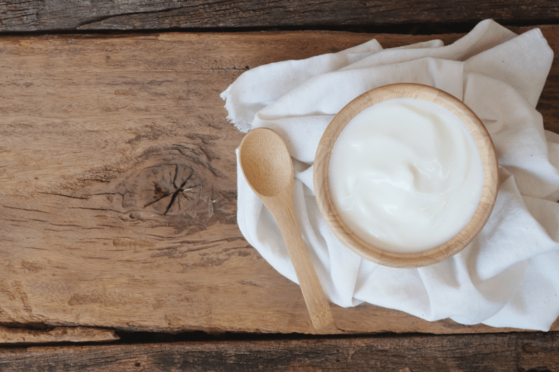

Greek Nogurt
I love working in the kitchen… every day is a new experience and a new creation. This experiment turned out to be rather exciting and a bit of a mess. Allow me to explain. Yesterday morning I started my cashew yogurt. I poured the 2 1/2 cups of mixture into my 4-cup mason jar and threw a towel over it. I then put it in the kitchen cabinet and shut the door so it could start to culture. Night-night, yogurt.

About 36 hours later (I actually forgot about it), I decided to check in on it. I lifted the towel to find my yogurt oozing down the side of the jar, creating a puddle around it. With wide eyes, I lifted the jar out and gently placed it on the counter. Was I dealing with a volcano here? Was it going to explode?
I took a spoon and started to stir the top, and within seconds it deflated, just like a soufflé! During the fermentation process, small bubbles had formed and caused the expansion. But once stirred, the bubbles collapsed and left me with the original 2 1/2 cups of “yogurt.” Now if that wasn’t fun!
After I gave it a good stir, I tasted it. TANG-ZIPPITY-DO-DA! For me, the level of fermentation was spot on, but this is where the beauty of creating your own yogurt comes into play. You can ferment for 8 hours for a milder flavor, or allow it to continue up to 48 hours if you really want it to pack a punch!
If you can’t have nuts, try the Coconut Yogurt. If you can eat nuts but can’t locate young thai coconuts, give this recipe a try. So great to have options.
There are so many beautiful things that you can do with this recipe, or with any yogurt recipe.
- Drinking yogurt: Mix in your favorite milk to achieve the desired thickness, and drink!
- Fruit yogurt: Add fresh fruit to the yogurt. You can place it on top, on the bottom, or stirred in.
- Create a parfait with layers of yogurt, granola, fresh fruits, or nuts.
- Add in savory spices and create an incredible variety of flavored dips for raw crackers or veggies.
 Ingredients:
Ingredients:
Yields 2 1/2 cups
- 1 1/2 cups raw cashews, soaked 2+ hours
- 1 cup filtered water
- 2 Tbsp honey/maple syrup or stevia to taste
- 1 Tbsp vanilla extract
- 1 probiotic capsule (1/4 tsp powder)
Preparation:
- First and foremost, make sure all the utensils and pieces of equipment you use for culturing are sterilized to avoid growing bad bacteria.
- If at any time you see mold–fuzzy, black, or pink–it will need to be tossed.
- Soak the cashews in 2 1/2 cups of water. Cashews swell during the soaking process. Once they are through soaking, drain and rinse.
- Clean the blender with warm soapy water and rinse with really hot water.
- Place the cashews, water, sweetener, vanilla, and probiotic (powder only, throw away the capsule) in a high-powered blender and blend on high for 2-4 minutes.
- This is done to turn the cashews into a creamy texture, and also the warmth from the blender will jump-start the fermentation process.
- Blend until the yogurt is perfectly smooth. We want the best mouth-feel we can get.
- If you don’t own a high-powered blender, wait to add the probiotics until the very end, when the cashew cream is smooth. Otherwise, you risk overheating the probiotics.
- Use a glass jar or bowl that has been washed and rinsed in hot water. Transfer the yogurt to the fermenting container.
- Cover and place in a dark spot for 8-48 hours.
- If you wish to speed up the process, you can position the container in a dehydrator set at 110 (F) for 4 – 7 hours.
- Taste test and see if you want it to ferment longer.
- Once done, stir the yogurt, place a tight lid on it, and store it in the fridge. It will thicken as it chills. It should last roughly 5 days.
© AmieSue.com